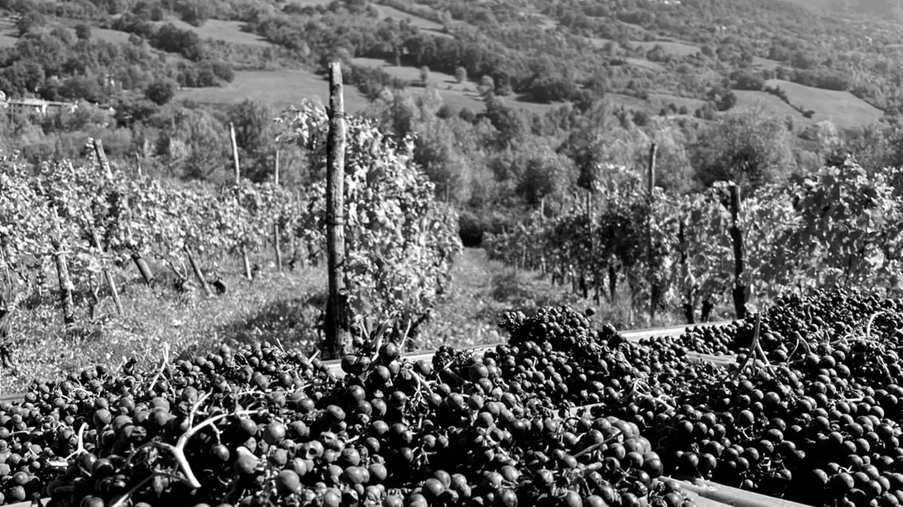
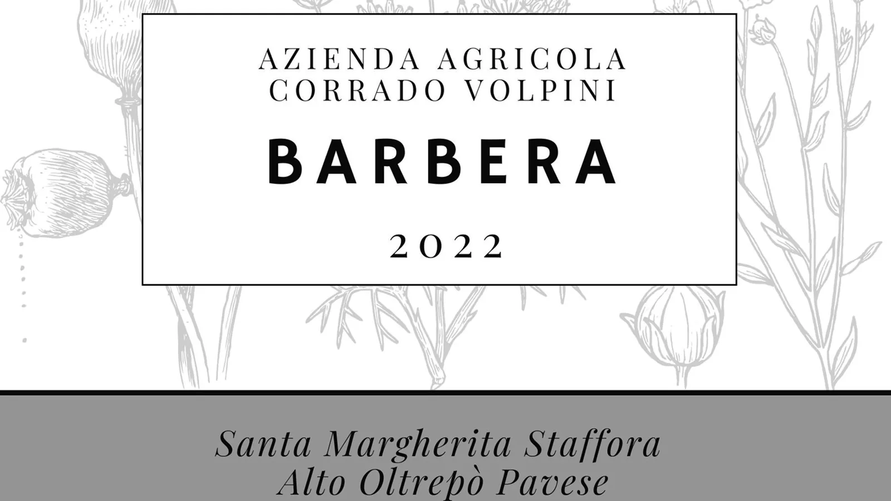

02 / Vini
I vini
Vini naturali, artigianali, prodotti con rese basse e forte attenzione alla qualità organolettica.
Prima il vitigno, poi il territorio. StraCrösa resta una firma asciutta e discreta.
Pinot Nero
Coltivato ai Firagni, insieme al Nebbiolo. Una linea verticale, fresca, legata all'altitudine.
Nebbiolo
Presente nei due vigneti, racconta la tensione tra alta collina e radicamento territoriale.
Barbera
Vitigno della tradizione, interpretato con linguaggio essenziale e contemporaneo.
Croatina
Materia locale, gesto manuale, carattere diretto.
Dolcetto
Al Moiasse, dove domina insieme al Nebbiolo. Un vino che parla di collina e misura.

Uve
Pre-esistenze